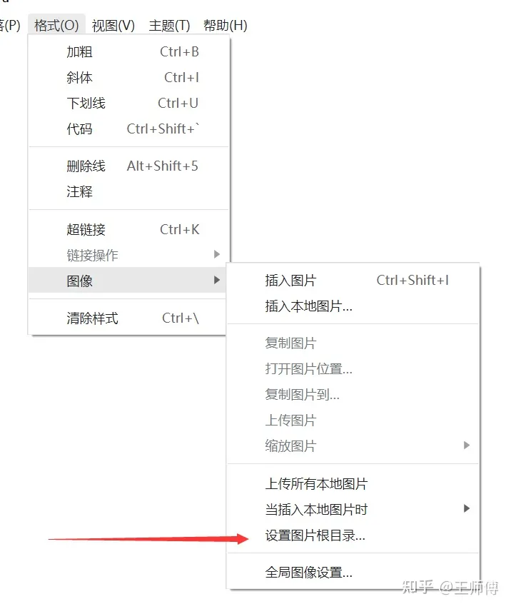

hexo插入图片且网络和本地都可以显示
hexo+typora插入图片且网络和本地都可以显示
两种方法解决解决hexo插入本地图片
先hexo new “文章名”，把图片放入_posts/文章名 文件夹中
第一种，使用官方引用图片方式
这种在本地typora不会显示
1 | {% asset_img example.jpg [title] %} |
第二种，使用typora-root-url,(推荐)
如果你知道 typora-root-url 这一个 typora 特有的 Markdown Front-matter 的话你就知道怎么解决了。
什么是 Front-matter？
Front-matter 是 markdown 文件最上方以 —- 分隔的区域，用于指定个别档案的变数。
typora-root-url 指定了 typora 把哪里当做图片搜索的根目录，就像程序的 workspace 一样。
怎么做？
我们只需要设定 typora-root-url 为资源文件夹，然后在 typora 里面导入图片资源时写相对路径，typora 就会自动以 typora-root-url 为起始目录开始搜索。
举个例子：设置 typora-root-url 为 resource，在 typora 里面导入图片 img1.jpg，这个时候 typora 就会去找 resource/img1.jpg。
因为使用的是相对路径，hexo 也能很好识别。如果在 hexo 的 scaffolds 下修改 Markdown 模板就可以让 hexo 自动为你填写 typora-root-url 了
注意复制后删除图片前多余的/，比如不对，应该是
同时也要打开_config.yml
1 | post_asset_folder: true |
举个例子（post.md）：
1 | --- |
hexo 会使用文件名来替换 hexo + typora调教指南 字段。
第三种，使用插件
在本地typora可以显示
hexo-renderer-marked 解决hexo插入本地图片
1 | npm install hexo-renderer-marked |
在配置文件_config.yml中修改
1 | post_asset_folder: true |
使用语法插入图片：
1 |  |
本地预览不显示图片的问题
在typora的设置中选择图片工具，选择格式->图像->设置图像根目录 ，到图像存放目录即可
